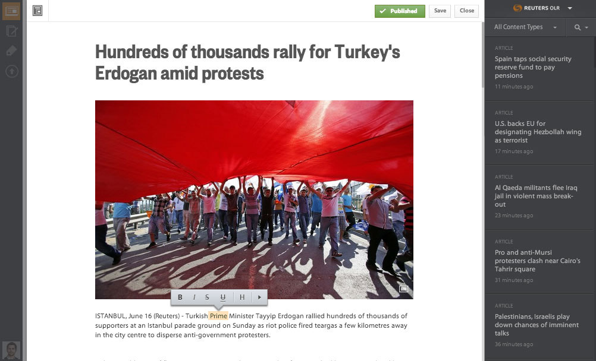
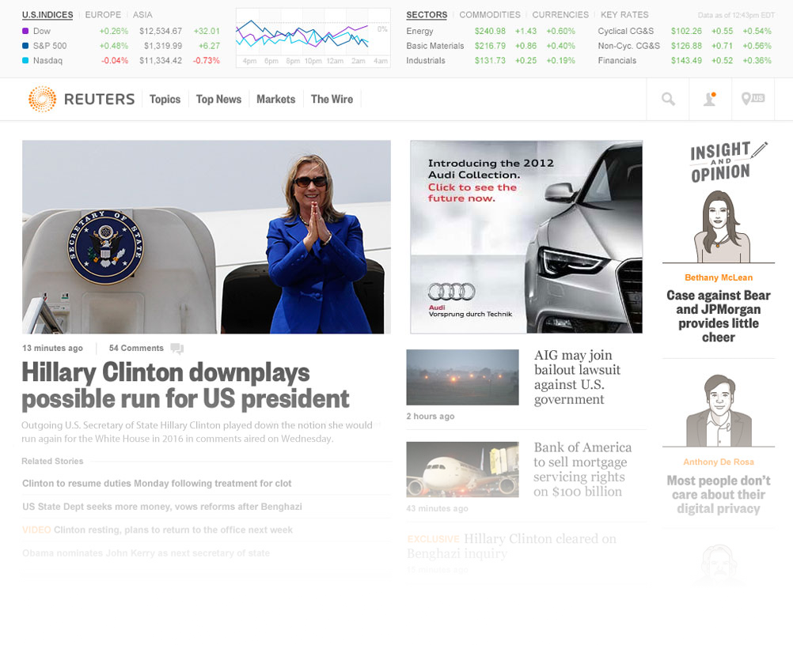

Thomson Reuters
Content management
designed for the future.
How do you reinvent news? You design a powerful content management system at the heart of a robust API. The result is an editorial breakthrough that provides a consistently beautiful and performant experience.
Roles
- Creative Lead
- Front-end Lead
- API Architect
A purely data driven interface.
The unique structue maintained strict separation between data structures and design. Editors could focus on curating content based on relevance, not looks. The top section represented the data for the active template and the bottom would appear chronologically below.
-

Invisible Data
Pages are built using a single list of content. Editors simply place the most important things at the top and templates do the heavy lifting.
-

Smart Controls
The API requires certain attributes on content. These requirements are revealed as editors work and not in an error message.
-

Simple Formatting
Creating beutiful articles or picture essays is a breeze. Add photos, videos, and tweets inline without worrying about layout. Just select a size and save.
More than a text editor.
When a story breaks, the right tools make all the difference. The CMS includes a fully-featured text editor and photo essay tool capable of complex formatting, inline media and links, and story management — all inside a beatiful and intuitive interface.
-
Reusable UI
The main components of the CMS - pages, media, articles, and photo essays - can be shown with a single click no matter what path the editor took.
-
Drag and Drop Uploads
Media uploads are done with drag and drop and users are prompted after upload to complete any missing metadata. Why can't everything be that easy?
-
Templating Done Right
Page data is presentation agnostic so editors can choose whatever layout they'd like without worrying about data loss or organization.
-
Full Test Suite
The CMS owes its stability and speed to a front-end suite of over 250 unit tests that cover everything from API calls to user interactions.
Time-tested.
Reuters editors were able to fully populate the new web experience in under four hours. That’s a productivity increase of over 400%.
